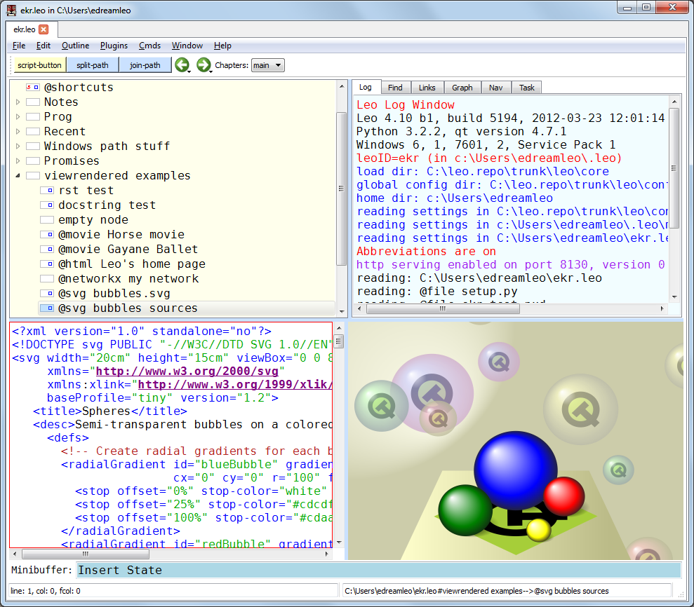

Creating and Editing Outlines¶
Contents
Command names¶
Every Leo command has a command name. In this document, keystrokes that invoke a command will be followed by the command name in parentheses.
For example, Ctrl-S (save-file) saves a Leo file.
The full-command (Alt-X) command executes any other command by typing its full name. For full details see The minibuffer & completions.
Leo’s main window¶
Here is a slightly reduced screenshot of Leo’s main window:
Leo’s main window consists of an outline pane at the top left, a log pane at the top right, a body pane at the bottom left, and an optional viewrendered pane at the bottom right. The minibuffer and status line lie at the bottom of the main window.
The log pane contains several tabs. The Log tab shows messages from Leo, the Find Tab shows the status of Leo’s Find/Replace commands. Other tabs may also appear in the log pane: The Spell Tab controls Leo’s spell-checking. The Completion Tab shows available typing completions.
Leo stores all data in nodes. Nodes have headlines, shown in the outline pane, and body text. The body pane shows the body text of the presently selected node, the node whose headline is selected in the outline pane. Headlines have an icon box indicating a nodes status. For example, the icon box has a black border when the node has been changed.
Operations on windows, panes & files¶
Alt-0 (vr-toggle) hides or shows the viewrendered pane.
<Return> puts focus in the body when it is in the outline pane.
Alt-T (focus-to-tree) puts focus in the outline pane.
Ctrl-T (toggle-active-pane) toggles focus between the outline and body panes.
You may open multiple Leo outlines in different tabs within the same main
window.
Ctrl-Tab (tab-cycle-next) switches between outline tabs.
Ctrl-N (new) creates a new outline in a new tab.
Ctrl-O (open-outline) opens an existing .leo file.
Ctrl-S (save-file) saves the outline.
Ctrl-Q (exit-leo) exits Leo. Leo will prompt you to save any unsaved outlines.
Operations on nodes¶
Ctrl-I or Insert (insert-node) inserts a new node into the outline.
Regardless of focus, Ctrl-H (edit-headline) begins editing the headline of
the selected node.
When editing a headline, <Return> (end-edit-headline) ends the editing,
leaving the focus in the body pane.
Ctrl-Shift-X (cut-node) cuts the outline and all its descendants, placing
the node on the clipboard.
Ctrl-Shift-V (paste-node) pastes a node (and its descendants) from the
clipboard after the presently selected node.
Ctrl-{ (promote) makes all the children of a headline siblings of the
headline.
Ctrl-} (demote) makes all following siblings of a headline children of the
headline.
The demote and promote commands are useful for gathering nodes together before
moving or cutting them.
Ctrl-M (mark) toggles the mark on a node.
Marked nodes have a vertical red bar in their icon area.
Selecting and moving outline nodes¶
You may select, expand and contract outline nodes with the mouse as usual, but using arrow keys is highly recommended.
When focus is in the outline pane, plain arrows keys change the selected node:
- Right-arrow (expand-and-go-right) expands a node or selects its first child.
- Left-arrow (contract-or-go-left) contracts a node if its children are visible, and selects the node’s parent otherwise.
- Up-arrow (goto-prev-visible) selects the next visible outline node.
- Down-arrow (goto-next-visible) selects the previous visible outline node.
When focus is in the outline pane, Shift-arrow keys move the selected node in the direction of the arrow, if possible.
Regardless of focus, Alt-arrow and Alt-Shift-arrow keys work on outline nodes:
- Alt-Home (goto-first-visible-node) selects the first outline node.
- Alt-End (goto-last-visible-node) selects the last visible outline node.
- Alt-arrow keys select the outline pane, and then act just like the plain arrow keys when the outline pane has focus.
- Alt-Shift-arrow keys select the outline pane and move the selected node.
The following commands work anywhere, regardless of focus:
- Ctrl-D (move-outline-down) moves the selected node down.
- Ctrl-L (move-outline-left) moves the selected node left.
- Ctrl-R (move-outline-right) moves the selected node right.
- Ctrl-U (move-outline-up) moves the selected node up.
Moving the cursor in text panes¶
When focus is in any of Leo’s text panes (body pane, log pane, headlines), Leo work like most text editors:
- Plain arrow keys move the cursor up, down, left or right.
- Ctrl-LeftArrow and Ctrl-RightArrow move the cursor by words.
- Home and End move the cursor to the beginning or end of a line.
- Ctrl-Home moves the cursor to the beginning of the body text.
- Ctrl-End moves the cursor to the end of the body text.
- PageDown and PageUp move the cursor up or down one page.
Note: As usual, adding the Shift key modifier to any of the keys above moves the cursor and extends the selected text.
The minibuffer & completions¶
Leo’s minibuffer appears at the bottom of Leo’s main window. You use the minibuffer to execute commands by name, and also to accumulate arguments to commands.
Alt-X (full-command) puts the cursor in the minibuffer.
You could type the full command name in the minibuffer, followed by the <Return> key to invoke the command, but that would be way too much work. Instead, you can avoid most typing using tab completion. With tab completion, there is no need to remember the exact names of Leo’s commands.
For example, suppose you want to print out the list of Leo’s commands. You might remember only that there are several related commands and that they all start with “print”. Just type:
<Alt-X>pri<Tab>
You will see “print-” in the minibuffer. This is the longest common prefix of all the command names that start with “pri”. The Completion tab in the log pane shows all the commands that start with “print-”.
Now just type “c<Tab>” and you will see the print-commands command in the minibuffer.
Finally, <Return> executes the command.
The output of the print-commands command appears in the commands tab, and focus returns to the body pane.
Summary:
- <Return> executes the command
- <Tab> shows all valid completions.
- <BackSpace> shows more alternatives.
- Ctrl-G exits the minibuffer and puts focus in the body pane.
Finding & replacing text¶
Ctrl-F (search-with-present-options) shows the Find Tab and puts the focus
in the minibuffer.
Important: the Find tab just shows you the status of search and replace
operations.
You control those operations from the minibuffer.
Note: You can toggle the radio buttons and check boxes in the Find Tab with Ctrl-Alt keys. For example, Ctrl-Alt-X (toggle-find-regex-option) toggles the Regexp checkbox.
After typing Ctrl-F, type the search string, say “def”, in the minibuffer.
Start the find by typing <Return>.
But suppose you want to replace “def” with “foo”, instead of just finding “foo”.
Before typing <Return> type Shift-Ctrl-R. The minibuffer prompts for the replacement string. Notice that the status area now shows “def” as the Find string.
Type “foo” and type <Return> to start the find-next command.
When Leo finds the next instance of “def”, it will select it.
You may type any command. The following are most useful:
- Ctrl-minus (replace-then-find) replaces the selected text.
- F3 (find-next) continues searching without making a replacement.
- F2 (find-previous) continues the search in reverse.
- Ctrl-G (keyboard-quit) ends the search.
Undoing and redoing changes¶
Leo has unlimited undo–Leo remembers all changes you make to outline structure or the contents of any node since you restarted Leo.
Ctrl-Z (undo) undoes the last change. Another Ctrl-Z undoes the previous change, etc.
Ctrl-Shift-Z (redo) undoes the effect of the last undo, etc.
The first two entries of the Edit menu show what the next undo or redo operation will be.
Getting help¶
F1 (help) shows a help message appears in the viewrendered pane. Alt-0 (vr-toggle) hides or shows this pane.
F11 (help-for-command) shows the documentation for any Leo command. F11 prompts for the name of a Leo command in the minibuffer. Use tab completion to see the list of all commands that start with a given prefix.
F12 (help-for-python) shows the documentation from Python’s help system. Typing completion is not available: type the full name of any Python module, class, function or statement.
These commands clarify which settings are in effect, and where they came from:
print-bindings
print-settings
These commands discuss special topics:
help-for-abbreviations
help-for-autocompletion
help-for-bindings
help-for-debugging-commands
help-for-dynamic-abbreviations
help-for-find-commands
help-for-minibuffer
help-for-regular-expressions
Using Leo, especially for programming, requires some learning initially. Please feel free to ask for help at any time.
Leo directives¶
Directives control Leo’s operations. Directives start with ‘@’ in the leftmost column.
Directives may appear either in headlines or body text.
Directives apply until overridden by the same (or related) directive in a descendant node.
Some commonly used general-purpose directives:
@color
@killcolor
@nocolor
These control whether to syntax color text.
Nodes may contain multiple color directives.
Nodes containing multiple color directives do not affect coloring of descendant nodes.
@language python
@language c
@language rest # restructured text
@language plain # plain text: no syntax coloring.
These control which language to use when syntax coloring text.
@pagewidth 100
Sets the page width used when formatting paragraphs.
@tabwidth -4
@tabwidth 8
Sets the width of tabs.
Negative tab widths cause Leo to convert tabs to spaces and are highly recommended for Python programming.
@nowrap
@wrap
These enable or disable line wrapping in the body pane.
Configuring Leo¶
Leo has a flexible (perhaps too flexible) configuration system. It’s best to use this flexibility in a restricted way as follows:
- The file leo/config/leoSettings.leo contains Leo’s default settings. Don’t change this file unless you are one of Leo’s developers.
- The file ~/myLeoSettings.leo contains your personal settings. Leo will not create this file automatically: you should create it yourself. Settings in myLeoSettings.leo override (or add to) the default settings in leoSettings.leo.
- Any other .leo file may also contain settings. Such settings apply only to that file and override all other settings. It’s best to use such settings sparingly.
As a result, settings may vary from one Leo file to another. This can be confusing. These two commands can help:
- print-settings shows each setting and where it came from.
- print-bindings shows each key binding and where it came from.
Important: within any file, settings take effect only if they are contained in an @settings tree, that is, are descendants of a node whose headline is @settings. Nodes outside @settings trees do not affect settings in any way.
Within @settings trees, you specify boolean settings with @bool nodes, string settings with @string nodes, menus with @menus and @menu nodes, etc. For exact details, please do study leoSettings.leo. You can open either leoSettings.leo or myLeoSettings.leo from the Help menu. Within leoSettings.leo:
- The node “About this file” explains about settings.
- The node “Candidates for settings in myLeoSettings.leo” highlights the settings you are most likely to want to customize.
Summary¶
Here are the most important things to remember:
- Every command has a name.
- You may execute any command by name from the minibuffer.
- Many commands are bound to keystrokes.
- You may bind multiple keystrokes to a single command and change bindings to your taste.
- Leo has commands to create, change and reorganize outlines.
- Within the body pane, Leo uses standard key bindings to move the cursor.
- Ctrl-F starts the find command. Use the minibuffer to complete the command.
- Leo’s configuration files specify all settings, including key bindings.
- Leo directives control how Leo works.

{kind=link}